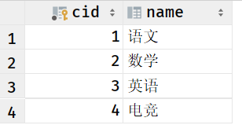
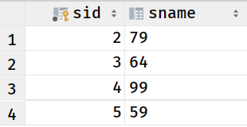
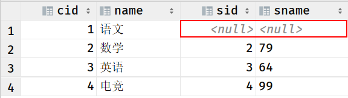
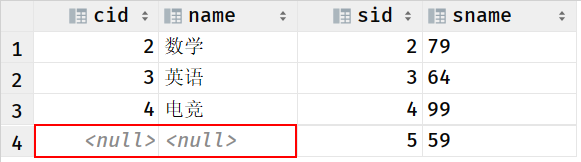
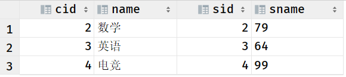

5. SQL JOINS
INNER JOIN (JOIN)：如果表中有至少一个匹配，则返回行
LEFT JOIN(LEFT OUTER JOIN)：即使右表中没有匹配，也从左表返回所有的行
RIGHT JOIN(RIGHT OUTER JOIN)：即使左表中没有匹配，也从右表返回所有的行

5.1. 几个测试说明各种join的区别:
测试条件，先建两张表，第一张为course，即学科表，第二张score，即成绩表
create table if not exists course (
cid int(5) primary key not null auto_increment,
name varchar(50)
);
insert into course values (1,'语文');
insert into course values (2,'数学');
insert into course values (3,'英语');
insert into course values (4,'电竞');
create table if not exists score (
sid int(5) primary key not null auto_increment,
sname varchar(50)
);
insert into score (sid, sname)
values (2,'79');
insert into score (sid, sname)
values (3,'64');
insert into score (sid, sname)
values (4,'99');
insert into score(sid, sname)
values (5, '59');


左连接，即连接以左表为主，查询出以符合指定连接条件的左表全部内容，并且以指定条件关联右表内容。测试左连接LEFT JOIN:
select *
from course c
left join score s
on c.cid = s.sid;
测试结果：

右连接，即以右表为主，查询出以符合指定连接条件的右表全部内容，并且以指定条件关联左表内容。测试右连接RIGHT JOIN:
select *
from course c
right join score s
on c.cid = s.sid;
测试结果：

内连接(即join)，以指定条件连接两表，查询出两张表的交集，测试内连接INNER JOIN：
select *
from course c
inner join score s
on c.cid = s.sid;
测试结果：

至此，区分显而易见。